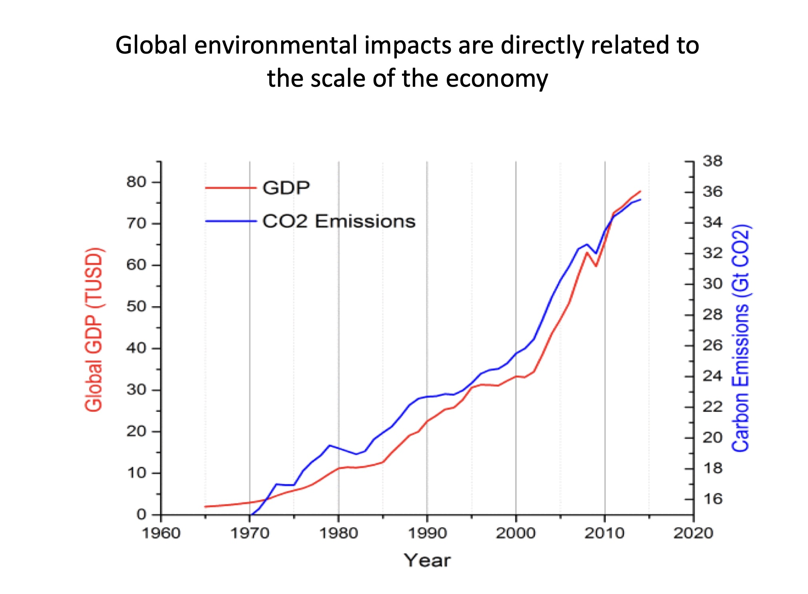
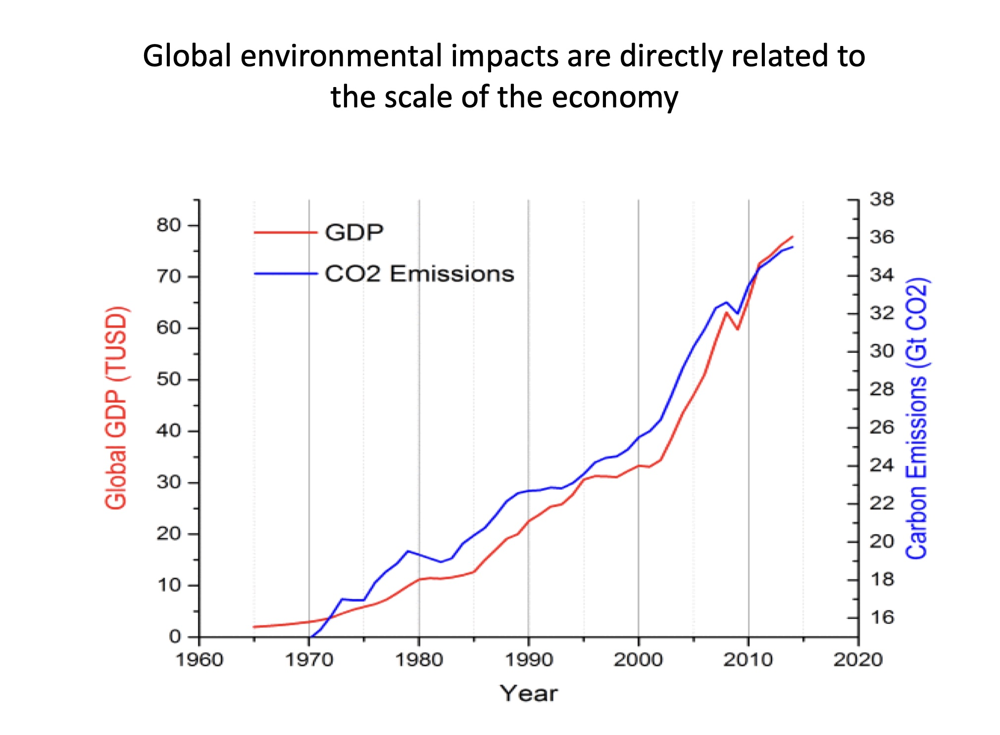

🗓 11-14 Jaunary 2022
We started term 2 with Andres Colmenares' provokative question, "What futures do we want to remember one billion seconds from now?" Andres is the founder of IAM creative research lab, an organization with the aim to help citizens make better decisions using design and address the socio-economic impact of the digital world.
Although we were meeting digitally from our homes, the format of the class was engaging and dynamic. We took our time to go around and check in and share with eachother. We discussed our thoughts on existential questions like:
I deeply resonated with the theme and topics presented in the course, "Look at difference differently" -Edouard Glissant
Degrowth- Goprgps Kallis, Alternate economies, planetary boundaries, colonized imaginatio
 Key takeaways from this class:
Our Presentation
Designing for the Next Billion Seconds
#digitaleconomy #degrwoth #speculation #futuresWe started term 2 with Andres Colmenares' provokative question, "What futures do we want to remember one billion seconds from now?" Andres is the founder of IAM creative research lab, an organization with the aim to help citizens make better decisions using design and address the socio-economic impact of the digital world.
Although we were meeting digitally from our homes, the format of the class was engaging and dynamic. We took our time to go around and check in and share with eachother. We discussed our thoughts on existential questions like:
- What is my definition of future?
- Why do we use a decimal numeral system to count and measure everything?
- What is everything?
I deeply resonated with the theme and topics presented in the course, "Look at difference differently" -Edouard Glissant
Degrowth- Goprgps Kallis, Alternate economies, planetary boundaries, colonized imaginatio
 Key takeaways from this class:
- as designers, how do we balance having an intention and at the same time understanding that we're not in control
- the use of language as an open and non-concrete tool that can be playful and shift perspectives
- interest in exploring our collective imagination
- lastly, but most importantly, solidarity over charity
Our Presentation